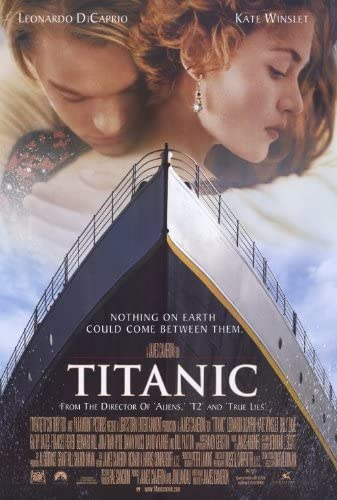

TITANIC

A fines del siglo XX, un equipo de buscadores de tesoros quiere recuperar un diamante llamado “el Corazón del Mar” que, según se supone, se perdió en el hundimiento del transatlántico británico Titanic, en 1912. En la búsqueda encuentran una caja fuerte que contiene un dibujo de una mujer que luce una joya. Al difundir el hallazgo por televisión, una anciana de más de cien años, llamada Rose, se comunica con el equipo de buscadores para decirles que ella es la mujer que aparece en el retrato. Rose y su nieta viajan para encontrarse con el director del equipo y Rose le cuenta su historia.
En 1912, Rose tenía 17 años. Se embarca en la primera clase del Titanic con su prometido, el millonario Cal. Con ellos viaja también Ruth, la madre de Rose, que anhela que su hija se case con Cal para superar los problemas económicos de la familia. Rose no ama a Cal, por lo que decide suicidarse arrojándose al mar desde la cubierta del barco. Súbitamente la disuade del intento un joven llamado Jack, un artista pobre que viaja en tercera clase gracias a que se ganó el pasaje en una partida de póquer.
Rose le dice a Cal que Jack la salvó de caer al mar y le pide que lo invite a cenar con ellos, a manera de agradecimiento. Jack y Rose vuelven a encontrarse al día siguiente y ella le cuenta que ha intentado suicidarse porque no puede elegir libremente a la persona con quien casarse. Jack acude a la cena en el comedor de primera clase y luego invita a Rose a una fiesta en el sector de la tercera clase, donde ambos bailan y se divierten. El mayordomo de Cal, que los ha seguido, le avisa a éste. Cal le ordena a Rose que no vuelva a ver a Jack. Sin embargo, al día siguiente, Rose y Jack se encuentran en la cubierta, donde se abrazan y se besan. Luego, aprovechando que Cal está en el salón de fumadores, Rose lleva a Jack a su camarote y le pide que la dibuje luciendo una joya con el diamante “el Corazón del Mar”, que le ha obsequiado Cal.
Esa noche ocurre el choque del barco contra el iceberg que provoca el hundimiento del barco. Los oficiales preparan los botes salvavidas para subir primero a las mujeres y los niños de la primera clase, pues saben que los botes no son suficientes y que muchos pasajeros morirán. En esa tensa situación, mientras el Titanic se hunde, Rose intenta salvar a Jack de Cal, que los persigue con una pistola para matar a su rival. Finalmente, Rose y Jack quedan flotando en el mar helado luego del hundimiento del barco. Jack hace que Rose se suba a un trozo de madera, pero él queda en el agua y pronto muere debido a las bajas temperaturas. Rose logra que un bote la rescate y se da cuenta de que en un bolsillo de su abrigo está “el Corazón del Mar”. Luego de relatar su historia, la anciana Rose arroja al océano “el Corazón del Mar” y se va a dormir. Sueña que está en el Titanic, tal como era antes del choque con el iceberg, y que allí se encuentra nuevamente con su amado Jack.
La película Titanic se realizó en 1997. El guion y la dirección estuvieron a cargo James Cameron. Los protagonistas fueron Leonardo DiCaprio (en el papel de Jack) y Kate Winslet (en el rol de la joven Rose). La película tuvo un costo de 200 millones de dólares, lo que la ubicó en su momento entre las películas más caras de la historia, y recaudó más de 1800 millones de dólares, lo que la convirtió en la más taquillera, puesto en el que se mantuvo durante diez años.